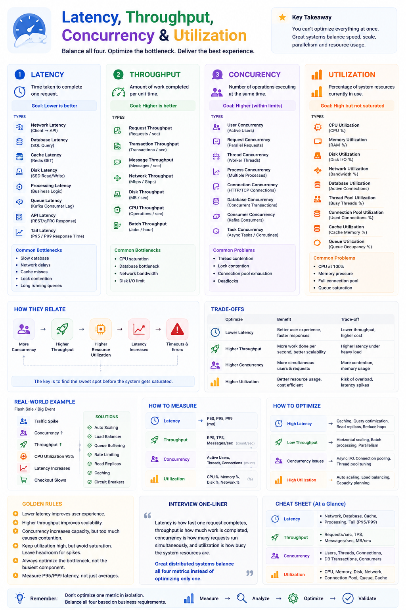
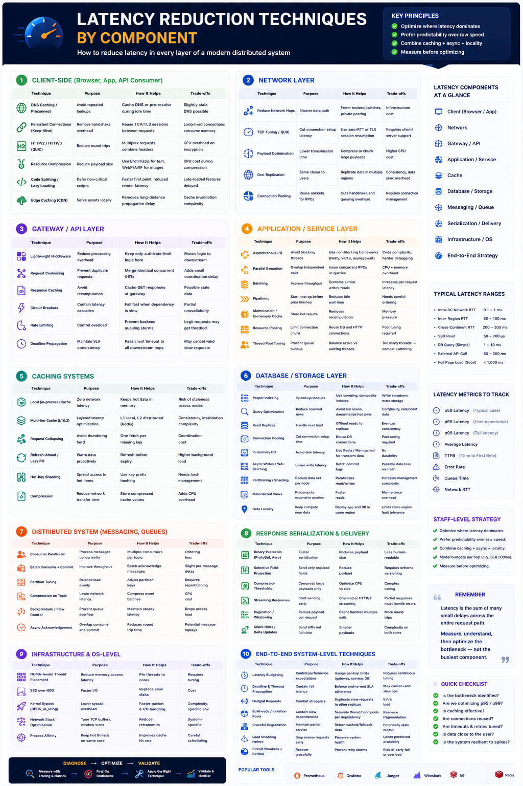

Interview notes — Senior / Staff Engineer level
Core Idea
Performance is not about optimizing one metric. Great systems balance Latency, Throughput, Concurrency, and Utilization based on business requirements.
Why Learn This? — Every Interview Asks These
The Four Performance Metrics
| Metric | Definition | Goal | Unit |
|---|---|---|---|
| Latency | Time to complete one request | Lower | ms, sec |
| Throughput | Work completed per unit time | Higher | RPS, TPS, MB/s |
| Concurrency | Operations executing simultaneously | Higher (within limits) | Threads, Connections |
| Utilization | Percentage of resource in use | High, not saturated | % |
⏱ Latency — Time for ONE request
Types
| Type | Example |
|---|---|
| Network | Client → API |
| Database | SQL Query |
| Cache | Redis GET |
| Disk | SSD Read |
| Processing | Business Logic |
| Queue | Kafka Consumer Lag |
| Tail (P95/P99) | Worst-case response |
Common Causes
How to Reduce
Throughput — Work per unit time
Types
| Type | Unit |
|---|---|
| Request | Requests/sec |
| Transaction | TPS |
| Message | Messages/sec |
| Network | Mbps / Gbps |
| Disk | MB/sec |
| Batch | Jobs/hour |
Bottlenecks
How to Improve
Concurrency — Simultaneous operations
Types
| Type | Example |
|---|---|
| User | Active Users |
| Request | Parallel Requests |
| Thread | Worker Threads |
| Connection | HTTP/TCP Connections |
| DB | Concurrent Transactions |
| Consumer | Kafka Consumers |
Common Problems
How to Improve
Utilization — Resource usage %
Types
Common Problems
How to Improve
Trade-offs
| Optimize | Benefit | Trade-off |
|---|---|---|
| Low Latency | Better UX | Lower throughput, higher infra cost |
| High Throughput | More work/sec | Higher latency under load |
| High Concurrency | More simultaneous users | More contention + memory usage |
| High Utilization | Better cost efficiency | Risk of overload & latency spikes |
How They Relate — The Saturation Chain
The key is finding the sweet spot before saturation.
Real-World Example — Flash Sale
What Happens
Solutions
How to Measure
| Metric | Measurement |
|---|---|
| Latency | P50, P95, P99 |
| Throughput | RPS, TPS, MB/sec |
| Concurrency | Active Users, Threads |
| Utilization | CPU %, Mem %, Disk % |
How to Optimize
| Problem | Solution |
|---|---|
| High Latency | Cache, DB Optimize, Read Replicas |
| Low Throughput | Parallelism, Batch, Scale Out |
| High Concurrency | Async I/O, Connection Pool |
| High Utilization | Auto Scale, Load Balance |
Common Interview Mistakes
✕ Optimizing CPU to 100%
✕ Increasing concurrency before removing bottlenecks
✕ Focusing only on throughput
✕ Ignoring P95/P99 latency
✕ Scaling before identifying the bottleneck
Staff Engineer Mindset
"How do I reduce latency?"
✓ Which metric is the actual bottleneck?
✓ Can I improve throughput without hurting latency?
✓ Is utilization approaching saturation?
✓ Will increasing concurrency improve capacity or create contention?
✓ What is the business priority: fast response or high throughput?
Golden Rules
Interview Cheat Sheet
Interview One-Liner
Latency is how fast one request completes, throughput is how much work is completed, concurrency is how many requests run simultaneously, and utilization is how busy the system resources are. Great distributed systems balance all four metrics instead of optimizing only one.
Latency, Throughput, Concurrency & Utilization

Bonus — Latency Reduction Techniques by Component
